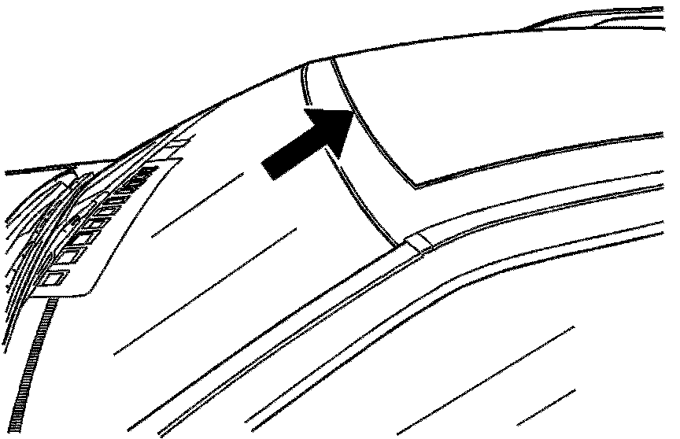
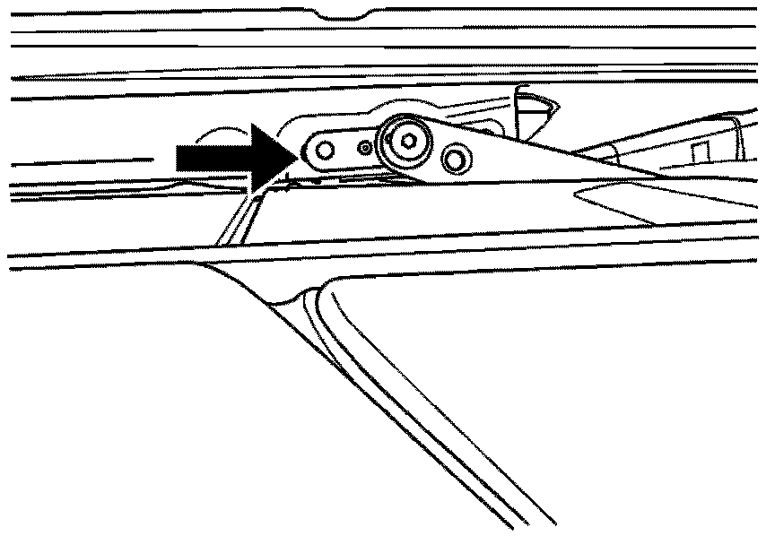

Body - Wind Noise Across Front of Sunroof
TECHNICALBulletin No.: 07-08-58-002A
Date: June 26, 2008
Subject:
Windnoise Across Front of Sunroof (Adjust Sunroof Window)
Models:
2004-2009 Cadillac SRX
Supercede:
This bulletin is being revised to add model years and an Important statement. Please discard Corporate Bulletin Number 07-08-58-002 (Section 08 - Body and Accessories).
Condition

Some customers may comment on Windnoise across the front of the sunroof window. Refer to the illustration above.
Cause
The sunroof window may be out of adjustment, creating a gap between the sunroof window and the weatherstrip along the front edge.
Correction

Loosen the two rear sunroof window attaching bolts and move the sunroof window track extension clip rearward.
Tighten
Tighten the bolts to 5 N.m (44 lb in).
Important:
Initialization / Teach Module Process should be performed any time the sunroof is adjusted or sunroof components are replaced. Failure to perform the Initialization / Teach Module Process may lead to performance or wind noise concerns because the sunroof glass panel is not properly located.
Warranty Information
For vehicles repaired under warranty, use the table.

Disclaimer